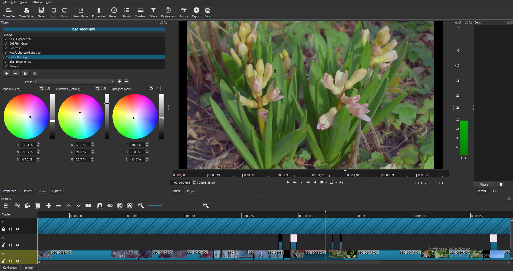

"The film's not very interesting and is more or less just me dipping my toes into the world of cinematography. I tried to emulate the look of Super 16 mm film but unfortunately, YouTube's
compression algorithm definitely affects how the grain looks. I might upload in 4K in the future to avoid this problem."
(Taken from YouTube video description.)
This short film was shot on April 25th and was created just so that I could get an overall feel of the film-making process. This was the first time that I had used a video editing program other
than Windows Movie Maker which was a crucial step for me to get into the world of cinematography. So far I've been trying out Shotcut, a free, open source video editing program. Although the
program is fairly basic, it has enough features for a beginner like me while still having a relatively shallow learning curve.
Gear used for this film: Nikon D3300 + Nikkor 50mm f/1.4 AI-S + Macro extension tubes.
Edited with Shotcut 20.04.12.

This is how Shotcut's interface looks. It's fairly straight-forward and intuitive to use.
A collection of stills taken from the film. I am fairly satisfied with how the colour grading turned out. I think the grading in several of the scenes imitate the look of Super 16 mm film pretty well,
especially for a first attempt.
 A collection of stills taken from the film. I am fairly satisfied with how the colour grading turned out. I think the grading in several of the scenes imitate the look of Super 16 mm film pretty well,
especially for a first attempt.
A collection of stills taken from the film. I am fairly satisfied with how the colour grading turned out. I think the grading in several of the scenes imitate the look of Super 16 mm film pretty well,
especially for a first attempt.